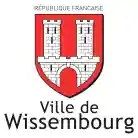
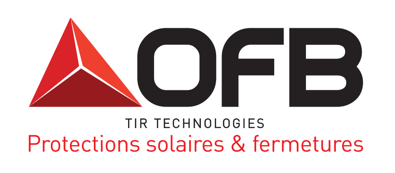
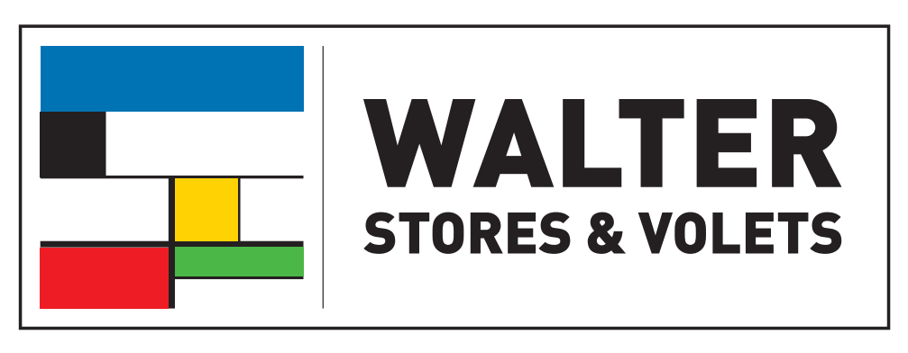
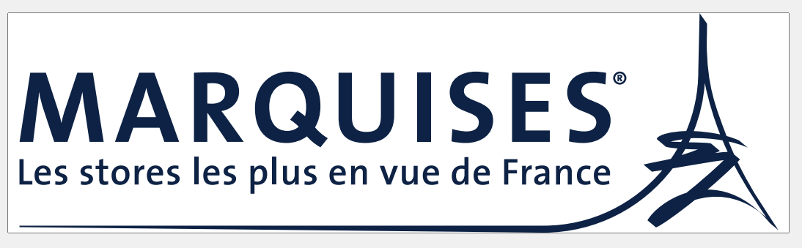
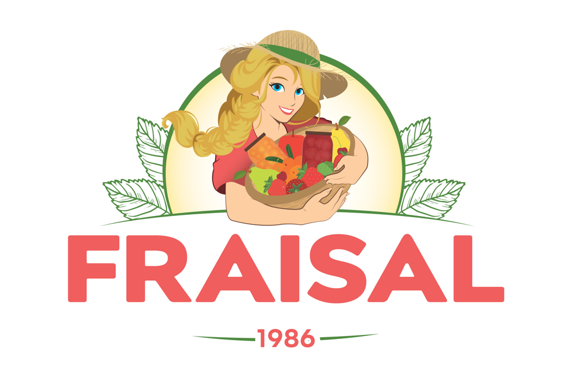
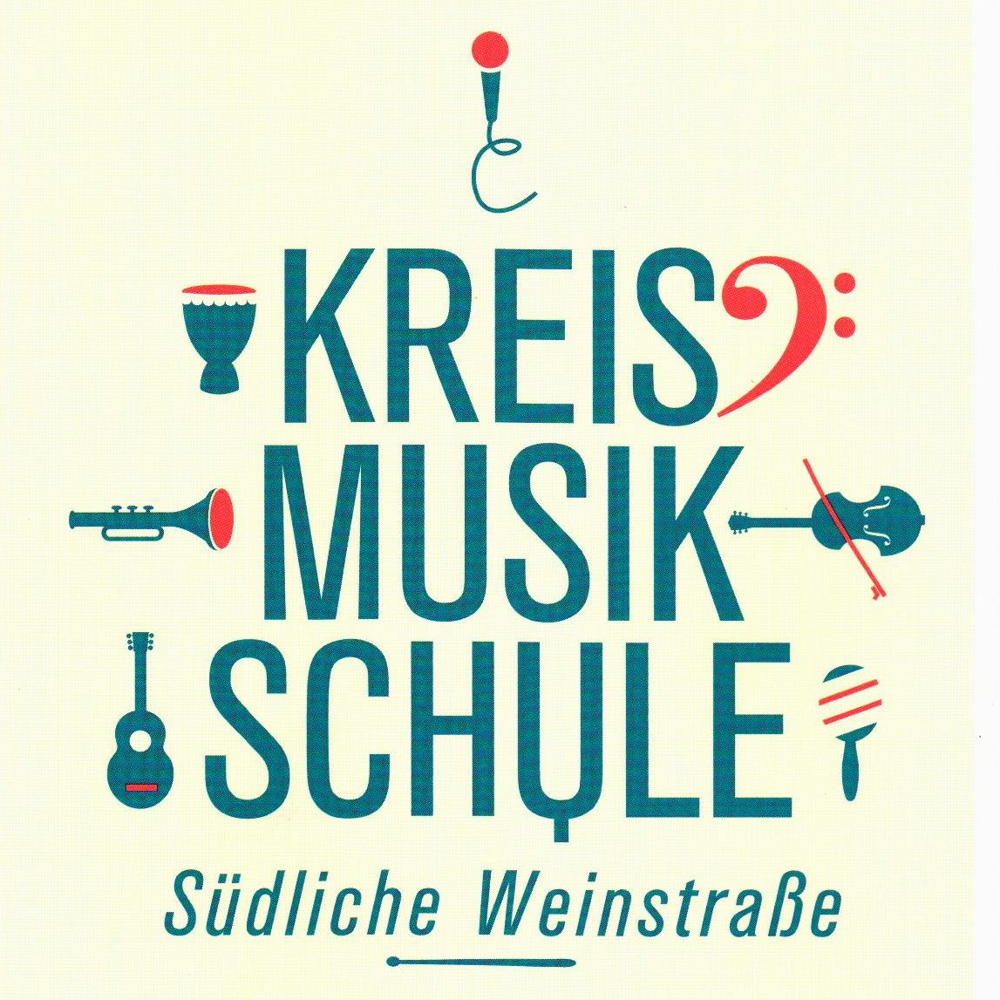

Faire un don
Ponctuel ou mensuel, à partir de 10 €. Reçu fiscal automatique : un don de 100 € ne vous coûte réellement que 34 € après réduction d'impôt de 66 %.
Donner en ligneMécénat & dons
Partitions, location de salles, transport des instruments, déplacements transfrontaliers : chaque saison a un coût. L'orchestre est une association entièrement bénévole — votre soutien va directement à la musique.
Ponctuel ou mensuel, à partir de 10 €. Reçu fiscal automatique : un don de 100 € ne vous coûte réellement que 34 € après réduction d'impôt de 66 %.
Donner en ligneDevenez membre, recevez le programme en avant-première et prenez part à l'assemblée générale. Adhésion annuelle à partir de 20 €.
Adhérer60 % de réduction d'impôt sur les sociétés, dans la limite de 0,5 ‰ du chiffre d'affaires. Votre logo sur les affiches, le programme et ce site, avec un lien vers votre entreprise.
Nous contacterComment ça marche
Dons, adhésions et billetterie passeront par HelloAsso, la plateforme de référence des associations françaises : 0 % de commission, reçu fiscal généré automatiquement, hébergement en France et conformité RGPD.
À activer. Les boutons ci-dessus pointent aujourd'hui vers HelloAsso à titre d'illustration. Une fois le compte de l'association créé (gratuit, une trentaine de minutes), ils pointeront vers les formulaires réels de don, d'adhésion et de billetterie.
La billetterie en ligne permet de réserver sa place à l'avance, de connaître l'affluence attendue et d'envoyer un rappel automatique la veille du concert. Elle reste compatible avec l'entrée libre : on réserve gratuitement, et le plateau se fait sur place.
L'adhésion soutient le fonctionnement courant de l'association et donne voix au chapitre lors de l'assemblée générale annuelle.
Le mécénat relève de la loi Aillagon du 1er août 2003 : 60 % du montant du don est déductible de l'impôt sur les sociétés, dans la limite de 0,5 ‰ du chiffre d'affaires hors taxes, avec report possible sur cinq exercices. En contrepartie, l'entreprise bénéficie d'une visibilité (logo, mention, invitations) plafonnée à 25 % du montant du don.
Ils nous soutiennent déjà
Nous remercions chaleureusement nos sponsors pour leur soutien fidèle.






William Hege, président de l'association, répond directement aux entreprises et fondations qui souhaitent s'engager aux côtés de l'orchestre.